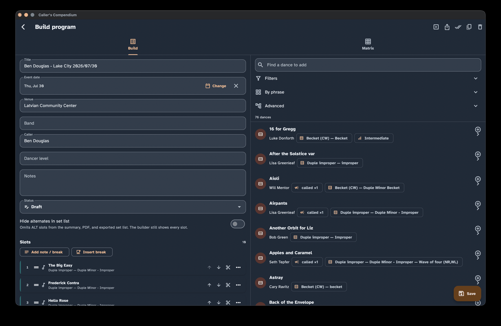
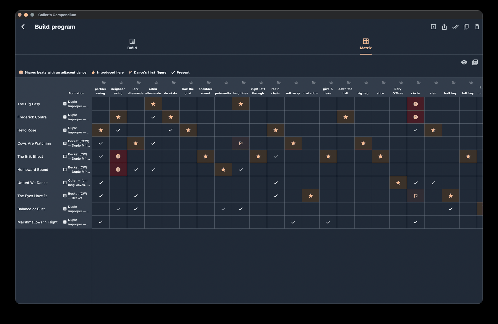

Programs & matrix
A program is an ordered set list for one event — Saturday's dance, a weekend, a one-off gig. This guide shows you how to build a program from your dances, check the variety of your evening at a glance with the matrix, print or share it, and keep track of what you have called.
Finding your way around these words. On-screen buttons and screens are written in bold — like Programs, New program, and Matrix. The first time a dance term appears it links to the Glossary, so you can get a plain-language definition without losing your place.
New to the app? The Getting started guide gives you the lay of the land first. To fill your library before you build a program, see Collection & search.
Create and manage programs
Open Programs to see the programs you have built. It starts with a short prompt and a New program button until you make your first one.
- Start one with New program.
- Import one from the Import program menu (the import icon in the Programs toolbar), which offers two sources — From title list (paste a set list you already have) and From ContraDB (pull an event straight from the online archive). Both are described below.
- Duplicate a program to reuse last month's shape as a starting point.
- Delete a program and it is only soft-deleted — an Undo option appears, and it moves to a Recently Deleted area you can restore from later, exactly as with dances.
Build from a list of titles
Already have your set list written out somewhere — a text file, an email, a note on your phone? Import from title list lets you paste it in and turn it into a program in one go. Give the program a title, paste your dance titles one per line, and you get a live preview before anything is saved:
- A line that matches a dance in your collection (ignoring capitalisation) becomes a dance slot linked to that dance.
- A line that matches nothing — or that matches more than one dance, so the app can't tell which you meant — is kept as a free-text note slot, the same kind of slot used for breaks and announcements. Nothing is dropped, and the order you pasted is preserved exactly.
- Blank lines are skipped, so you can space your list out however you like.
Press Import to create the program; an Undo option appears in case you change your mind. You can then open the program and tidy up any notes — for example, searching your collection to link a dance the paste couldn't find, or using a note slot's … menu to create a new dance from it directly (see "Kinds of slots" below).
Fill the gaps from The Caller's Box. If some lines didn't match anything in your collection, the preview shows a Resolve unmatched online button. It looks each unmatched title up in The Caller's Box and, where it finds a confident single match, imports that dance and links the slot to it — so a paste can pull in dances you don't own yet, not just the ones you already have. It needs an internet connection, and anything it still can't place stays a note for you to sort out by hand. Unlike a Caller's Box search on the Collection screen, this looks at every dance the Box knows — including ones whose figures it won't share — because it runs unattended and adding to it what it can find is not the same as changing what it decides to import on its own.
Import a program from ContraDB
You can also build a program from an event on ContraDB. Choose From ContraDB in the Import program menu; the screen offers two ways to find the event, and both end in the same preview-before-you-keep flow:
- Paste URL — paste a
contradb.com/programs/Nlink (or just its number) and choose Fetch program. - Search by name — type part of a program's name and pick it from the results.
When you search, the app marks programs you've likely already brought in, so repeat imports are easy to spot:
- Imported — you already imported this exact ContraDB program before (matched by its ContraDB program id). Hover or long-press for the date it was imported.
- Possibly imported — a program with the same title already exists in your collection, but nothing ties it to this ContraDB event (for example, you built it by hand, or imported it before this marker existed).
Each marker shows an icon and a label — never colour alone — and the same hint appears at the top of the preview once you open a program. It's only a hint: re-importing is always allowed if you want a fresh copy.
Either way, the app reads the event's running order and lays it out as a program: each dance ContraDB lists is matched to your collection or imported for you, and anything it can't place is kept as a note, in the exact order of the event. Review the preview, then choose Import — with the same Undo safety net as every other import. This needs an internet connection.
Build a program
On a wide screen — a desktop or a tablet in landscape — the builder shows two panes side by side that work together. On a narrower screen, such as a phone, the same pieces are still there: your program fills the screen and the collection picker opens as a panel when you go to add a dance.
The Programs builder with ordered program slots beside a searchable collection picker.

- Your program — the ordered list of slots that make up the evening.
- The collection picker — the same search tools you know from Collection & search: the Filters panel, the Advanced figure builder, and the By-Phrase panel. Find a dance and add it to the program. In the Advanced panel, turn on Online search to search The Caller's Box or ContraDB; selecting a result imports it and adds it immediately. An exact match selects the dance already in your collection without prompting. When the import needs your choice between a likely match and a separate record, a resolution dialog appears before the dance is added.
Kinds of slots
A program is made of three kinds of slots:
- Dance slots — dances pulled from your collection.
- Free-text slots — for the things between dances: a break, a waltz, announcements. A free-text slot with real text in it also offers Create a dance from this on its … menu, which opens the dance editor pre-filled with that text as the title; saving links the slot to the new dance in one step, so a note left behind by an import that couldn't find a match doesn't need a separate trip through the collection to fix. A non-break note slot also offers Replace…, which imports or selects a dance and swaps it into that slot while clearing the old note and preserving its timing details.
- Alts — an alternate dance you might call instead of the one above it. An alt appears indented under its primary and is marked with an icon and text (never color alone), so it is always clear which dance is the backup.
Each slot can also carry a note, a guest caller, and a planned length in minutes — useful both for pacing the evening and for the timing display in Perform mode. A dance slot's … menu also offers Edit slot, whose dialog includes a Replace… button for swapping the dance in place — keeping the note, guest caller, planned length, and mark-performed status exactly as they were — instead of adding the new dance, dragging it into position, and deleting the old one.
To reorder slots, use the drag handle or the move up / move down buttons. Both do the same job, so you are never forced to drag.
Event details
A program carries the details of its event:
- date, venue, and notes; and
- program-level band, caller, and dancer level.
The venue can be a simple free-text label, or — when you turn on Use reusable venue records in Settings → Program → Venues — a saved venue record you can reuse across programs, with its own address, contacts, and schedule that you edit in one place. A program linked to a saved venue shows and exports that record's details; otherwise the free-text label is used. The two coexist losslessly, so you can switch modes without losing what you typed. See Settings for the toggle.
If you often play the same role, set a default caller or band in Settings → Defaults and new programs will prefill them — see Settings. You can always change these per program.
Check your evening with the matrix
The Matrix tab turns your program into a grid worked out from the choreography, so you can see the shape of the evening at a glance.
The program matrix with moves as columns, dances as rows, pinned headers, and markers that explain how figures are introduced and reused.

Here is how to read it:
Dances are rows; moves are columns.
A pinned Formation column next to each dance title shows its formation (duple improper, Becket, triple minor, and so on), so you can spot too many non-improper formations stacking up in a row without losing your place while scrolling through moves.
Four cell markers say what is happening at each intersection. Each is an icon with a label, and the matrix carries a legend:
Marker Label Meaning Star Introduced here The first dance (top to bottom) whose choreography uses that move, wherever it falls in that dance Flag Dance's first figure The move that dance opens with Check Present The move appears in that dance Alert Shares beats with an adjacent dance (or Same phrase as adjacent dance, if you turn the setting below off) See below The alert marker replaces the check when a move's beats actually overlap in two dances that run back-to-back in the program — for example a partner balance & swing that lands on the exact same beats in one dance and again in the very next dance. Adjacent repeats like this can make two dances feel samey on the floor, so the matrix flags them for you to notice and, if you like, reconsider. Only the two colliding cells are flagged; a repeat that is not in neighbouring dances, or whose beats don't actually overlap, is left alone. If you'd rather flag any repeat that merely lands in the same named phrase (A1, A2, B1, B2…) — even when the beats themselves don't overlap, which is how the matrix used to behave — turn off Flag exact beat overlap only in Settings ▸ Program.
Headers stay pinned as you scroll, so you never lose track of which row or column you are looking at.
Hide a column you do not need using the eye icon in its header. The icon is always there rather than appearing on hover, so it works by touch, mouse, or keyboard alike. Hiding is a view preference for right now: hidden columns come back the next time you open the program, and they never change what prints or exports. To restore them all at once, use Show all columns above the matrix, beside the PDF button — it is available only while something is hidden. The pinned Formation column cannot be hidden, since it is part of each dance's identity rather than a move.
Reorder, rename, or remove columns for good in Settings ▸ Program ▸ Matrix columns. Unlike the per-session eye icon above, changes there are saved and apply to every program, on screen and in the printed PDF: drag a column to a new position, give it a name that suits your callers, or remove one you never use. Removed columns can be brought back at any time, and two reset controls restore the built-in columns or wipe every customisation. See Settings ▸ Program ▸ Programs for the full walkthrough.
Parameterized columns
In Settings ▸ Program ▸ Matrix columns, Add parameterized column lets you make a column for one taxonomy move with optional exact parameter values, such as partner swings or balance-and-swings. The move must be a canonical taxonomy move; matching uses the figure's effective parameters, including taxonomy defaults and alias-pinned values. A configured parameterized column appears only when at least one figure matches it.
When parameterized columns overlap, the one with more exact constraints wins. Columns with the same number of constraints use their order in the settings list. A match replaces the ordinary built-in column rather than appearing in both columns, so the matrix and its first-figure, debut, phrase, and beat markers all refer to the selected parameterized column. Values are exact: there are no ranges, comparisons, wildcards, or multi-move matchers.
Partner and neighbor swing baselines keep their legacy empty-program behavior when no plain swing candidate exists. Once plain candidates exist, a baseline is hidden only when every candidate is captured by parameterized columns; it stays visible when the capture is mixed.
Compound columns
In Settings ▸ Program ▸ Matrix columns, Add compound column lets you define a named column for a sequence of at least two exact taxonomy moves. The sequence is a per-dance boolean: it appears when those moves occur in one strictly-adjacent, contiguous run in the dance's original figures. For example, a compound for circle-left → swing → circle-left matches that exact three-figure run; an intervening figure or a gap does not match.
Compound columns are additive. The matching figures keep their built-in or parameterized memberships, while the compound column is emitted only for dances where it is present. Matching uses canonical move ids and exact effective parameter values, including taxonomy defaults and alias-pinned values. You can reorder, hide, rename, edit, or delete compounds alongside the built-in and parameterized columns, and the same display settings apply on screen and in the PDF.
Compounds never match across dances, skip gaps or intervening figures, or use subsequences, ranges, comparisons, wildcards, or multi-move alternatives. They are presence markers rather than counts and do not participate in adjacent-dance phrase or beat collision warnings.
The matrix shows presence, not counts — whether a move is in a dance, not how many times, and not the order the moves come in. That is exactly what you want for spotting patterns across the evening: scan a move's column and you can see at a glance that, say, several dances in a row all have a swing, or that one move turns up in nearly every dance. To make the grid meaningful, swings, allemandes, and chains are split out by role (partner/neighbor/larks/robins/…); swings are further split by whether they carry a "balance and" or "meltdown" lead-in, and heys are split by their length — so similar-looking moves are not lumped together.
A few practical notes:
- On a narrow phone screen, the matrix falls back to a compact layout that still conveys the same information.
- For screen-reader users, the matrix reads as a proper table, so you can navigate it row by row and column by column.
- To take it with you, use Export or print matrix as PDF in the Matrix tab. This is the matrix's own control, separate from the program's Export menu, and it is unavailable while the matrix is empty. The PDF is landscape and carries its own legend — where the screen uses icons, the printed page uses the marks
★(introduced here),▸(dance's first figure),✓(present), and‼(shares beats with an adjacent dance, or same phrase as adjacent dance if you've turned the setting off). Columns you have hidden on screen still print: the export always covers the full matrix. See Share, print & export.
Print, export, and email a program
When it is time to hand out or file your set list, open the program's Export menu:
- Share set list (text) — hands a plain-text set list to your system's share sheet, ready to drop into an email or a message.
- Share (program + dances) — writes one file holding the program and every dance it uses, so another caller gets the dances too, not just a list of titles.
- Copy set list — puts the same text on your clipboard.
- Export as JSON file — the same file as Share (program + dances), named
.jsonso a device without the app can still open it. - Export / print PDF — builds a PDF and opens your system's print dialog.
A set list is titles, event details, and slot notes by default. When you share, copy, or export as PDF the app asks "Include figures?" — choose Set list only to keep titles and notes, or Set list and figures to append a full figure card for each dance after the set list. If none of the program's dances have structured figures the question is skipped automatically. If your program is linked to a venue with contact people recorded, the PDF and the two file exports ask before including any of those personal details, and leave them out unless you say otherwise. A venue's street address is never included in any export, with or without a prompt.
Share, print & export covers all of this in detail, including what a shared bundle contains and what never leaves your device.
Track what you have called
Every program feeds a dance's calling history. Open any dance from your collection and its detail view lists the programs that include it, most recent first.
There are two ways to think about "called," and a setting lets you choose:
- Any program that contains the dance counts (the default), or
- only slots you marked performed count.
You mark a slot performed from within Perform mode, during the event. The Settings toggle decides which of the two rules a dance's calling history follows.
Where to go next
- Fill your library first: Collection & search
- Call your program from the stage: Perform mode
- Put your programs in your own words: Dialect
- Hand a set list to someone else: Share, print & export
- Save and move your data: Settings · Backup & portability
Not sure what a word means? The Glossary has plain definitions for every term used across these guides.